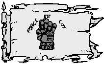

Le grand duché d'Agramor
Histoire
En 971 CV, un humain répondant au nom de Malzekiande s'enfuit de Laelith. Il était poursuivi par la justice de la cité pour des affaires d'escroquerie et était également soupçonné de meurtre. L'homme prit le premier bateau qu'il trouva, franchit les deux lacs, et s'installa dans un petit village de paysans (la future capitale Goracht) afin de se faire oublier. Mais Malzekiande se rendit rapidement compte que les terres sur lesquelles il s'était exilé étaient incroyablement fertiles et, doué pour les affaires, il réussit rapidement à les exploiter de manière bien plus profitable que ne le faisaient les gens de la région jusque là. Sa réussite attira rapidement de nombreux colons et deux ans après son arrivée, Malzekiande se déclara officiellement propriétaire de ces terres que les autochtones appelaient Agramor. Le duché d'Agramor était fondé et son premier auto-proclamé duc, Malzekiande, y apportera la prospérité durant de nombreuses décennies.
Mais après ces années d'expansion économique vinrent les années sanglantes. La première guerre d'épuration du sang, contre les tribus orcs et gobelines de la région, puis les deux suivantes contre les nains, les gnomes, les halfelins et les elfes. Quelques siècles plus tard, suite à une épidémie causée par des chiens, Agramor relança les guerres et décréta la quatrième contre les canidés, suivie par la cinquième plus récemment contre les rats. Aujourd'hui, même si des tentions racistes persistent, la paix semble toutefois revenue.
Géographie
Le sud-est est composé de collines sur lesquelles poussent de nombreuses vignes, et de montagnes. Le nord abrite une partie des forêts d'Azilian. L'ouest, en bordure du lac des Hautes Eaux, et le centre, sont de grandes plaines des plus fertiles, qu'Agramor exploite merveilleusement et qui nourrissent une bonne partie du royaume. Les deux principales rivières d'Agramor sont l'Oqar, qui sert de frontière avec Azilian, et la Courageuse, qui passe entre Goracht et Albeuvray. La capitale d'Agramor est Goracht. La ville de Paltimoleven est elle, après Laelith, le plus grand port du royaume. Tout le trafic commercial des nations de l'est et du nord-est passent par là.
Population
Pourchassés dans tout le duché, exécutés sur les places publiques, brûlés, tous les non-humains ont fuit Agramor suites aux différentes guerres d'épuration du sang. Ceci explique pourquoi de nos jours on compte parmi les habitants du duché presque 98% d'humains. Heureusement les poussées racistes et xénophobes des seigneurs d'Agramor semblent aujourd'hui s'être atténuées et même si les non-humains ne s'y installent toujours pas définitivement (certains seigneurs font ce qu'il faut pour continuer de faire régner un peu la terreur sur leurs terres), il n'est plus rare d'en trouver de passage dans le duché sans qu'ils soient trop inquiétés.
Villes principales. Paltimoleven, Goracht (la capitale), Almarande, Elboise, Albeuvray, Ogar, et environ 75 villages.
Population totale : 97 400 habitants (98% humains).
Cultes
RELATIONS
Agramor est en conflit larvé avec de nombreuses provinces du royaume.
Avec Olizya, la raison en est que les seigneurs d'Agramor, machistes, ne comprennent pas qu'une province puisse être dirigée par des femmes. Il y a donc du mépris plus que de la haine pour cette province, et un sentiment de supériorité plus que marqué du côté d'Agramor vis-à-vis du matriarcat.
Avec Egonzasthan le problème est d'une autre nature, et basé sur le sentiment raciste qui habite les seigneurs d'Argramor. Pour eux, les nains, elfes et autres halfelins n'ont pas droit à posséder des terres du royaume. Ce conflit est ancestral, mais le sentiment profondément ancré. Le torchon brûle donc fréquemment, et nombre de petites échauffourées à la frontière entre ces deux provinces sont relatées dans les archives.
Les relations avec Azilian sont nettement moins tendues, mais Agramor voit d'un mauvais œil cette nouvelle forme de gouverner que les citoyens de la marche appellent la démocratie. Les seigneurs sont donc très attentifs à ce qu'il n'y ait pas d'effet tâche d'huile.
La seule province pour laquelle Agramor fait des efforts est Kaoca. Bien que ce soient des gnomes et non des humains qui gouvernent cette province, Agramor est le principal client des machines de guerre que fabrique la baronnie, et est tout à fait conscient de l'exceptionnelle qualité de leur matériel. Les seigneurs mettent donc de l'eau dans leur vin lorsqu'ils s'expriment sur les gnomes de Kaoca.
Les dieux les plus vénérés en Agramor sont Torm et Tempus, le dieu de la guerre et des batailles. Toutefois Baine y possède également de nombreux admirateurs parmi les seigneurs locaux.
Politique
Descendant de Malzekiande, Uleiric III est l'actuel duc d'Agramor. La province est dirigée de manière féodale, comtes, vicomtes et chevaliers ayant fait allégeance au duc se partagent les terres. Mais Uleiric III ne gouverne pas seul. Il existe deux conseils politiques très importants qui sont consultés par le duc avant chaque prise de décisions concernant la vie du duché. Le premier est la Table des Pairs, une assemblée composée des seigneurs les plus importants du duché. Le deuxième est l'Assemblée des Propriétaires, qui regroupe les personnalités les plus riches. Les lois de la chevalerie et les lois du marché sont donc celles qui font foi en Agramor. Pour une personne ni guerrière, ni riche, la vie est dure en Agramor, et la vie des paysans qui y travaillent la terre n'est pas très éloignée de ce que l'on appelle l'esclavage. Les duels sont fréquents en Agramor, et même encouragés par la loi.
De par sa nature, le duché entretient de mauvaises relations avec nombre de ses voisins. Avec Laelith, à cause de l'histoire de la naissance du duché, Malzekiande étant fiché dans les archives de la cité sainte comme un délinquant. Toutefois il n'y a jamais eu de conflit armé entre ces deux parties. Le duché s'étant rapidement positionné comme le premier fournisseur de denrées agricoles de la cité, Laelith a intérêt à ne jamais couper complètement les relations.
Économie
Conséquences des vagues d'émigrations, les guerres d'épuration du sang eurent également rapidement un impact négatif sur l'économie du duché. Heureusement la situation semble aujourd'hui stabilisée, et même si des tensions racistes persistent, le duc actuel s'efforce de renouer avec la prospérité.
La principale ressource d'Agramor est son agriculture. Le duché peut en effet se vanter d'avoir sur ses plaines les terres les plus fertiles de tout le royaume des Deux Lacs et Agramor en est d'ailleurs considéré comme le jardin. On peut également rajouter à cela le mercenariat des seigneurs d'Agramor. En effet, leur témérité est reconnue de tous, et il n'est pas rare que Laelith engage certains d'entre-eux comme mercenaires pour des missions dangereuses au-delà de ses frontières, ou bien pour assurer sa défense lors des temps troublés.
Guide du routard
Le palais du duc à Goracht. Une merveille architecturale avec ses 1000 tours (des petites d'ornements à ses 10 donjons, en passant par les pigeonniers).
L'enceinte à tournoi d'Albeuvray. La meilleure du royaume. Tournoi chaque semaine.
Le grand temple d'Elboise. Une des plus belles constructions religieuses de Faerûn, dédié à Torm.
Écrit par blueace